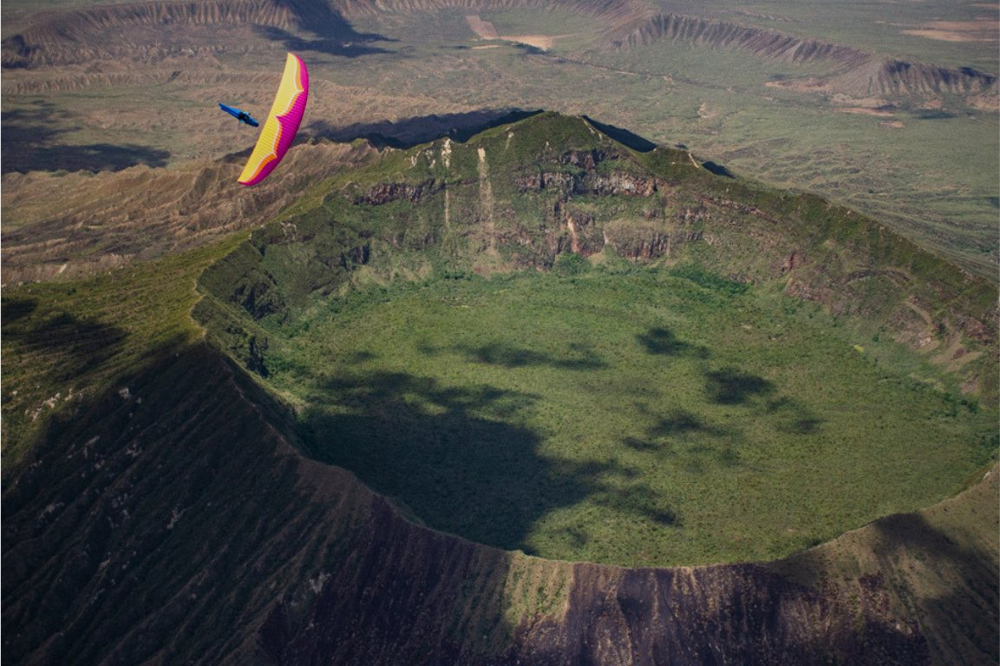

The steppe
Kazakhstan
- When
- June 2027
- Length
- 10 days
- Group
- Small group
- From
- €2,100per pilot
Expeditions
Small groups, fixed dates. Prices are per pilot.

Bir Billing, Himalaya
The photograph: The front range
Launch from the meadow at Billing, climb the knobs of the Dhauladhar and run west towards Dharamshala, then turn for Bir with the light going.
Guaranteed to run

Kerio Valley, Rift Valley
The photograph: Mount Longonot
Launch from the lush green takeoffs in Kerio, chase thermals over the flatlands, and set your sights on the distant shores of Lake Naivasha.
Booking open
The steppe
Lima and the Andes
Each trip page has the routes, the questions pilots ask and what the trip is actually like. Or book a free 30-minute call.